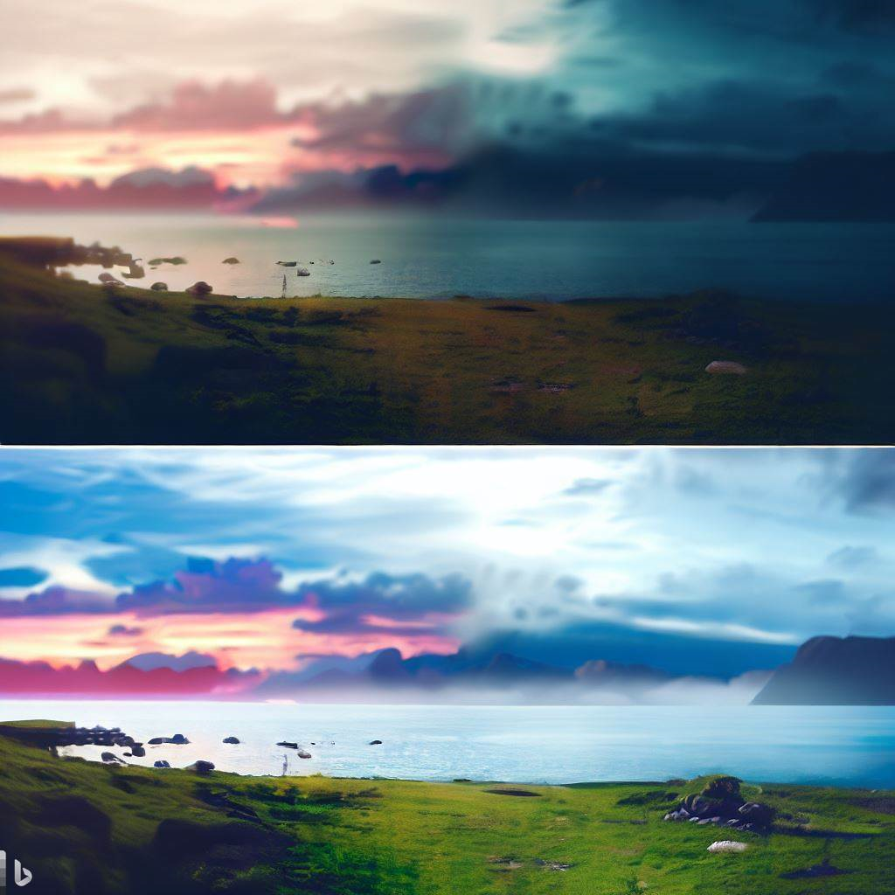
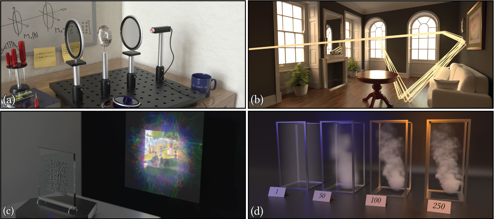
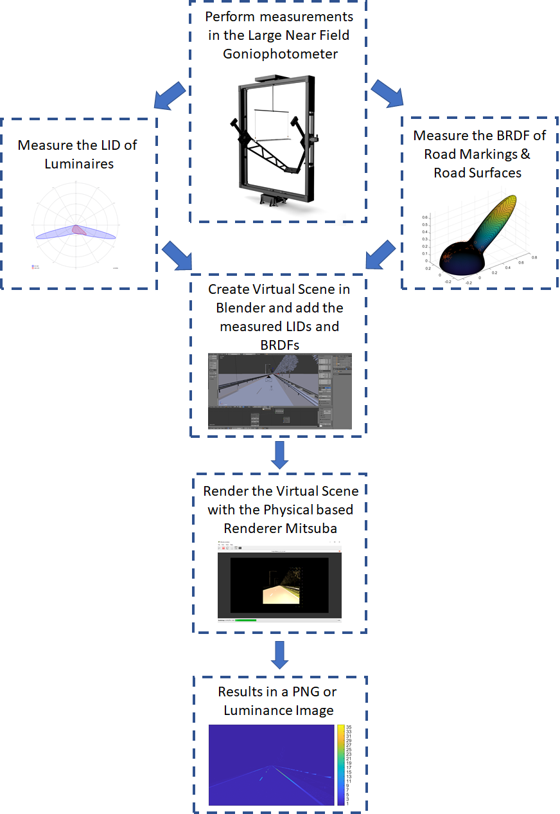
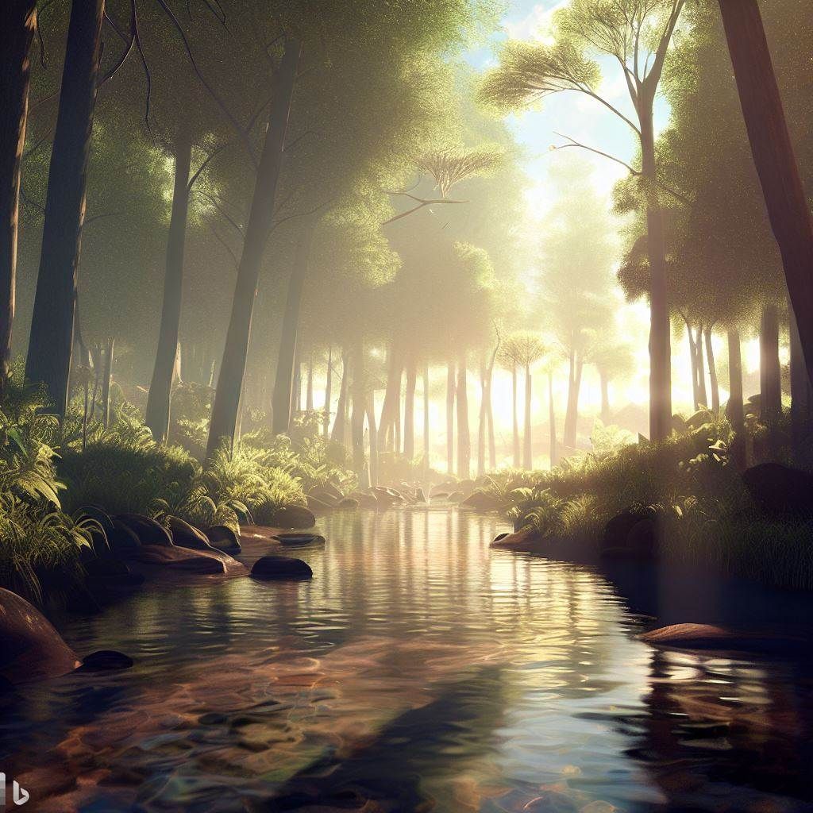

Physical Based Rendering
Physical based rendering (PBR) is a rendering technique that simulates the physical behavior of light to create realistic and accurate images. It is widely used in 3D graphics and gaming industries to create high-quality images that closely resemble real-life objects and environments.
Understanding Physical Based Rendering
PBR is based on the laws of physics that govern the behavior of light. It takes into account factors such as light source, surface reflectance, and material properties to create accurate and realistic images. This is achieved by using a combination of techniques such as ray tracing, global illumination, and BRDF (bidirectional reflectance distribution function).
What is Ray Tracing?
Ray tracing is a technique used to simulate the behavior of light by tracing the path of rays from the light source to the camera. This technique calculates the interactions between light and surfaces to create realistic shadows, reflections, and refractions.
What is Global Illumination?
Global illumination is a technique used to simulate the indirect light that bounces off surfaces and illuminates other parts of the scene. This technique takes into account the reflective and refractive properties of surfaces to create accurate and realistic lighting.
What is BRDF?
Bidirectional reflectance distribution function (BRDF) is a mathematical function that describes how light is reflected from a surface. It takes into account the angle of incidence and the surface properties to calculate the amount of light that is reflected in a specific direction.
History of Physical Based Rendering
The concept of physically based rendering originated in the late 1970s and early 1980s. The initial research focused on modeling and simulating the behavior of light and materials, which were based on the laws of physics. However, the development of physically based rendering techniques didn't gain traction until the mid-1990s with the introduction of radiosity and ray tracing algorithms.
The importance of photorealism
Virtual Reality (VR) has revolutionized the way we showcase products, buildings, and lighting installations to customers. With its immersive environment, users can experience a computer-generated reality that feels and looks real. However, while virtual renderings can provide useful information, they often fail to capture the physical realism of the environment accurately. This is due to the limited number of reflection and light emission properties that most 3D computer graphics software packages use, which reduces computation time. As a result, physical-based rendering is crucial in creating luminance images that accurately reflect reality, particularly in the context of evaluating indoor and outdoor lighting installations.
Device dependent color space
One of the biggest challenges in achieving physical realism is the device-dependent color space that virtual renderings are typically processed in, leading to differences in perception on different computer screens or devices. While calibrating or characterizing each screen is a solution, it requires expensive equipment and a conversion between device-dependent and device-independent color spaces. A more practical approach is to create virtual renderings in a device-independent color space, which can be achieved through a physical renderer like Mitsuba.
Physical based renderer Mitsuba
Mitsuba is a well-known physical renderer that can efficiently create renderings in a device-independent color space with acceptable computer computation costs. Its input includes information about the light intensity distributions (LID) for each fixture, reflection characteristics for each object expressed by bidirectional reflectance distribution function (BRDF), and the camera/render characteristics, resulting in a virtual rendering that accurately reflects reality.
Advantages of Physical Based Rendering
PBR has several advantages over traditional rendering techniques. Some of these advantages include:
Consistency:
PBR ensures consistency in the look and feel of objects and materials, regardless of the lighting conditions.
Flexibility
PBR provides more flexibility and control over the look and feel of objects and materials, allowing for better customization.
Efficiency
PBR reduces the need for additional post-processing and compositing, saving time and resources.
Realism
PBR simulates the physical behavior of light, which results in more accurate and realistic lighting. This makes it ideal for creating realistic environments, objects, and characters.
Applications of Physical Based Rendering
PBR is used in a variety of applications such as:
Gaming
PBR is widely used in the gaming industry to create realistic and immersive environments, objects, and characters. It is used in both AAA and indie games to create high-quality graphics that push the boundaries of what is possible.
Architecture and Design
PBR is used in architecture and design to create realistic visualizations of buildings, interiors, and products. This helps architects and designers to visualize their designs in a realistic and accurate way.
Film and Animation
PBR is used in film and animation to create realistic and believable characters, environments, and special effects. It is used in both 2D and 3D animation to create high-quality visuals that are on par with live-action films.
Conclusion
In conclusion, while virtual reality is perfect for showcasing products, buildings, and lighting installations, pursuing physical realism is essential in accurately representing the environment. Physical-based rendering, particularly through a physical renderer like Mitsuba, offers a practical solution for creating luminance images that are device-independent and accurately reflect reality. By adopting physical-based rendering, designers and architects can create virtual renderings that are both visually appealing and physically accurate, making them an essential tool in the design process.
Physical based rendering is a powerful rendering technique that simulates the physical behavior of light to create realistic and accurate images. It has several advantages over traditional rendering techniques, including realistic lighting, consistent look, and better photorealism. PBR is used in a variety of applications such as gaming, architecture and design, and film and animation, and is an essential tool for artists and designers who want to create high-quality visuals.
FAQs
- What applications support PBR rendering?
- How does PBR differ from traditional rendering techniques?
- Can PBR be used for real-time rendering?
- Are there any downsides to using PBR?
- Can I use PBR to create realistic animations?
• Many 3D modeling and rendering applications support PBR rendering, including Blender, Unity, and Unreal Engine.
• PBR tries to simulate light as it behaves in the real world, while traditional rendering techniques often use shortcuts and approximations.
• Yes, PBR can be used for real-time rendering in applications like video games and virtual reality experiences.
• PBR can be more computationally intensive than traditional rendering techniques, which can make it slower to render complex scenes.
• Yes, PBR can be used to create realistic animations, but it may require more effort and skill to create animations that look realistic in motion.
This text was written with help of ChatGPT and the figures were generated using Bing.
If you're interested in learning more about this research, feel free to reach out!
Rik Spieringhs